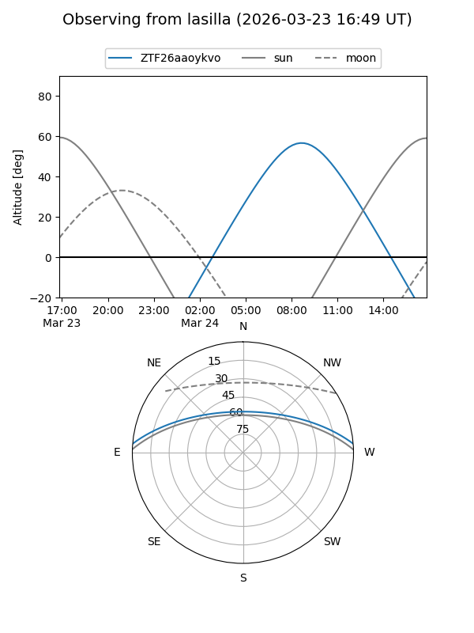
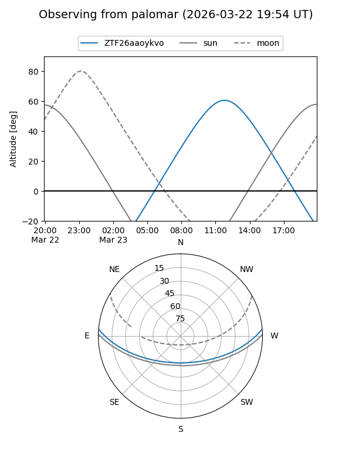

ZTF26aaoykvo
Target ZTF26aaoykvo at 2026-03-23 12:09
Aliases and brokers:
FINK: link
Lasair: link
ALeRCE: link
alt names
ZTF26aaoykvo (ztf,fink_ztf)
Coordinates:
equatorial (ra, dec) = 240.6232,+4.09218
equatorial (HMS+DMS) = 16:02:29.58,+04:05:31.85
galactic (l, b) = (14.7732,+38.99515)
Flags:
Photometry:
last ztfg=16.68
1 ztfg detections
Lightcurve
Visibility


Additional plots